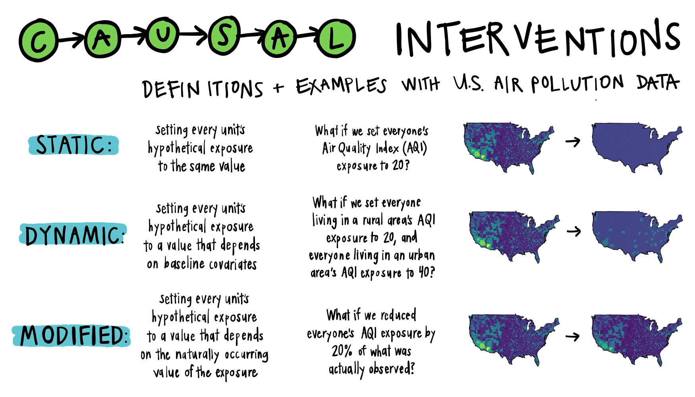
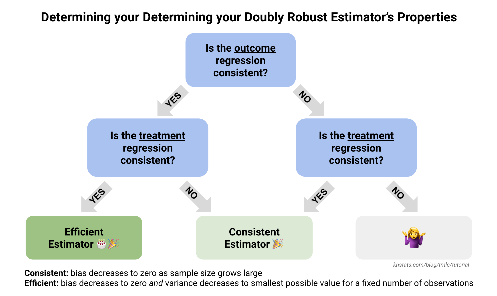

KHstats
Blog
Talks
Illustrations
Visual Guides for Causal Inference
Educational Drawings and Comics
Research
Statistics Methods
Clinical Applications
Google Scholar Profile
CV
Blog
Categories
All
(21)
career
(4)
miscellaneous
(1)
programming
(8)
statistics
(8)
Order By
Default
Title
Date - Oldest
Date - Newest
Annotated Forest Plots using ggplot2
Sep 15, 2022
Building Statistical Intuition for Individualized Treatment Rules
Aug 10, 2022
You’re just my type! A beginner’s guide to building a custom mechanical keyboard
Jun 15, 2022
Using ggplot2 to create Treatment Timelines with Multiple Variables
Jun 8, 2022

An Illustrated Guide to Modified Treatment Policies, Part 1: Introduction and Motivation
Apr 7, 2022
How many ways are there to get a SOFA Score of 10?
Feb 10, 2022
Becoming a Biostatistician: FAQs for ‘A Day in the Life of a Biostatistician’
Jan 15, 2021

An Illustrated Guide to TMLE, Part III: Properties, Theory, and Learning More
Dec 12, 2020
An Illustrated Guide to TMLE, Part II: The Algorithm
Dec 11, 2020
An Illustrated Guide to TMLE, Part I: Introduction and Motivation
Dec 10, 2020
Become a Superlearner! An Illustrated Guide to Superlearning
Oct 10, 2020
On the Sidelines: NYC’s COVID-19 Outbreak from the Eyes of a Pulmonary and Critical Care Team’s Biostatistician
Oct 3, 2020
Customizable correlation plots in R
Aug 24, 2020
Rethinking Conditional and Iterated Expectations as Linear Regression Models
Aug 10, 2020
Silver Linings: five coding tricks learned during Lockdown
Jul 10, 2020
Patient Treatment Timelines for Longitudinal Survival Data
Nov 28, 2019
Stats on Drugs: An Interview with a Pharmaceutical CRO Biostatistician
Oct 6, 2019
Using {sl3} for superlearning
Sep 12, 2019
Tips and Tricks from the 2019 New York R Conference
My favorite takeaways from attending the 2019 New York R Conference.
Jun 10, 2019
A Day in the Life of a Biostatistician
It seems fitting that my first blog post is on a topic that I tried and failed to find via Google search a few years ago.
Apr 16, 2019
A Condensed Key for A Visual Guide to Targeted Maximum Likelihood Estimation (TMLE)
A helper post to
TMLE Part II: The Algorithm
containing only formulas and graphics.
Jan 9, 2019
No matching items